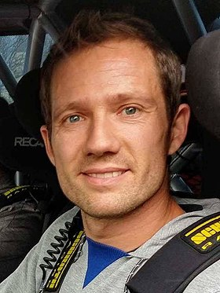

Le rallye c'est quoi ?
Le rallye est une compétition automobile passionnante qui consiste en une course chronométrée à
travers
des itinéraires variés. Les participants, souvent des pilotes expérimentés, s'affrontent pour
atteindre
le meilleur temps sur des routes diverses, de la campagne aux circuits urbains. Le rallye met en
avant
la précision, la vitesse et la maîtrise des véhicules, offrant un spectacle palpitant pour les
passionnés de sport automobile.
Depuis quand sa existe ?
Le rallye est une forme de sport automobile qui trouve ses racines dans les courses de voitures qui
ont
émergé à la fin du XIXe siècle. Les premiers rallyes étaient des compétitions de longue distance,
mettant en avant la résistance et la fiabilité des véhicules, plutôt que la vitesse pure. Ces
événements
étaient souvent organisés pour tester la capacité des voitures à parcourir de longues distances sur
des
routes variées, souvent dans des conditions difficiles. Les rallyes ont évolué au fil du temps pour
devenir un sport automobile très populaire, avec des épreuves organisées dans le monde entier.
Au cours du XXe siècle, les rallyes sont devenus de plus en plus compétitifs, avec des règles
strictes
et des épreuves chronométrées sur des routes fermées à la circulation. Les voitures de rallye se
sont
également développées pour devenir des machines très spécialisées, conçues pour affronter une
variété de
terrains, des routes de montagne aux déserts, en passant par la neige et la glace.
Le rallye a gagné en popularité grâce à des compétitions telles que le Championnat du Monde des
Rallyes
(WRC), qui met en compétition les meilleurs pilotes et équipes du monde entier. Les fans du rallye
sont
attirés par la combinaison de compétition, d'endurance et de technologie, ainsi que par le défi
constant
de maîtriser une grande variété de conditions routières. En fin de compte, l'histoire du rallye est
celle d'une évolution constante, de courses longue distance à des épreuves de haute performance qui
continuent à captiver les amateurs de sport automobile à travers le monde.
Le groupe B
Le Groupe B en rallye est une période emblématique de l'histoire de ce sport, qui s'est déroulée de
1982
à 1986. Ce fut une ère de l'innovation et de la compétition féroce, mais aussi marquée par des
tragédies
et des controverses. Le Groupe B a vu l'introduction de voitures de rallye extrêmement puissantes et
légères, ce qui a propulsé le sport à un niveau de performance jamais vu auparavant.
Les voitures du Groupe B étaient soumises à des règles relativement libérales en ce qui concerne la
puissance, le poids et la technologie. Les constructeurs automobiles ont répondu en développant des
voitures de rallye qui étaient de véritables monstres de puissance, avec des moteurs turbochargés
produisant plus de 500 chevaux, le tout dans des châssis compacts et légers. Ces machines étaient
capables d'accélérations fulgurantes et de vitesses de pointe impressionnantes.
Cependant, la puissance brute des voitures du Groupe B a rapidement posé des problèmes de sécurité,
car
elles étaient extrêmement difficiles à contrôler sur les routes étroites et sinueuses des épreuves
de
rallye. Plusieurs accidents graves, dont certains mortels, ont conduit à des inquiétudes
croissantes. En
conséquence, le Groupe B a été dissous après la saison 1986, en raison de la pression croissante des
organisateurs de rallyes, des équipes et du public.
Bien que le Groupe B ait été de courte durée, il a laissé une empreinte indélébile dans l'histoire
du
rallye en tant qu'ère de développement technologique extrême et de performances hors normes. Les
voitures du Groupe B sont aujourd'hui des icônes du sport automobile, et leur héritage perdure dans
la
mémoire des fans de rallye du monde entier.
Les pilotes marquant du WRC
Sebastien Loeb
Sébastien Loeb, originaire de France, est une légende vivante du Championnat du Monde des Rallyes.
Il a dominé le sport automobile pendant une décennie avec neuf titres mondiaux consécutifs entre
2004 et 2012. Loeb est connu pour sa polyvalence exceptionnelle, capable de briller sur une grande
variété de surfaces, de la neige et de la glace aux routes en asphalte. Son style de conduite précis
et calculé, associé à une détermination sans faille, en a fait l'un des pilotes les plus réussis de
l'histoire du rallye. Sa carrière est un exemple de persévérance et de maîtrise, laissant une
empreinte indélébile dans l'histoire du sport automobile.
Tommi Mäkinen
 Tommi Mäkinen, pilote finlandais renommé, est célèbre pour ses exploits dans le Championnat du Monde
des Rallyes. Il a remporté quatre titres mondiaux consécutifs entre 1996 et 1999, établissant sa
réputation de maître des routes forestières sinueuses de Finlande. Mäkinen était reconnu pour sa
maîtrise exceptionnelle de ces terrains, où la vitesse et la précision sont essentielles. Sa
carrière brillante et sa personnalité discrète en ont fait l'un des pilotes les plus admirés du WRC,
et son héritage perdure dans le monde du rallye.
Tommi Mäkinen, pilote finlandais renommé, est célèbre pour ses exploits dans le Championnat du Monde
des Rallyes. Il a remporté quatre titres mondiaux consécutifs entre 1996 et 1999, établissant sa
réputation de maître des routes forestières sinueuses de Finlande. Mäkinen était reconnu pour sa
maîtrise exceptionnelle de ces terrains, où la vitesse et la précision sont essentielles. Sa
carrière brillante et sa personnalité discrète en ont fait l'un des pilotes les plus admirés du WRC,
et son héritage perdure dans le monde du rallye.
Colin McRae
Colin McRae était un pilote écossais audacieux et charismatique qui a laissé une marque indélébile
sur le Championnat du Monde des Rallyes. En 1995, il est devenu le premier Britannique à remporter
le titre mondial, ce qui a marqué un moment historique pour le sport. McRae était célèbre pour son
style de conduite agressif et spectaculaire, attirant de nombreux fans. Sa personnalité passionnée
et son talent sur les routes de rallye en ont fait une icône, et sa victoire au Rallye Monte-Carlo
est gravée dans la mémoire des amateurs de sport automobile.
Sébastien Ogier

Sébastien Ogier, originaire de France, est un pilote contemporain qui a continué de dominer le
Championnat du Monde des Rallyes. Il a remporté de nombreux titres mondiaux au volant de différentes
équipes, démontrant sa polyvalence et sa détermination à rester au sommet malgré une concurrence
féroce. Ogier est connu pour son engagement, son professionnalisme et sa capacité à gérer les
pressions des courses les plus exigeantes. Sa carrière continue d'écrire l'histoire du rallye
moderne, en faisant de lui l'un des pilotes les plus marquants de sa génération.
| Année | Champion Pilote | Champion Constructeur | Nombre de Courses | Nombre de Victoires Pilote | Nombre de Victoires Constructeur | Nombre de Podiums Pilote |
|---|---|---|---|---|---|---|
| 2019 | Ott Tänak | Toyota | 13 | 6 | 8 | 11 |
| 2018 | Sébastien Ogier | M-Sport Ford | 13 | 4 | 6 | 9 |
| 2017 | Sébastien Ogier | M-Sport Ford | 13 | 5 | 8 | 10 |
| 2016 | Sébastien Ogier | Volkswagen | 13 | 8 | 12 | 11 |
| 2015 | Sébastien Ogier | Volkswagen | 13 | 8 | 12 | 10 |
| 2014 | Sébastien Ogier | Volkswagen | 13 | 8 | 12 | 12 |
| 2013 | Sébastien Ogier | Volkswagen | 13 | 9 | 12 | 12 |
| 2012 | Sébastien Loeb | Citroën | 13 | 9 | 11 | 11 |
| 2011 | Sébastien Loeb | Citroën | 13 | 8 | 13 | 11 |
| 2010 | Sébastien Loeb | Citroën | 13 | 8 | 12 | 11 |